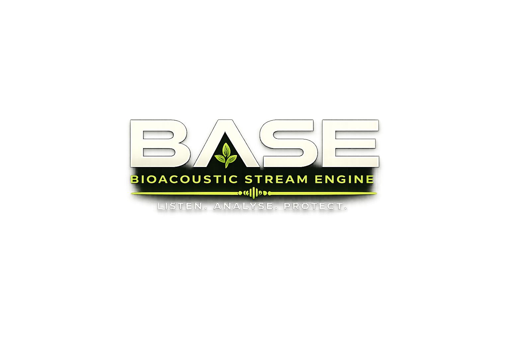

Listening to nature

Listening to nature
This project was conceived by the Blenheim Palace Innovation Team, combining our own work with contributions from pre-trained models and open research. We are excited to engage others and to learn together more about our natural world.
David Green — Head of Innovation and AI, Blenheim Palace
A belief that technology can bring people closer to the natural world — making
acoustic biodiversity monitoring open, accessible, and shareable.
Harry Hanson · Tawhid Shahrior · Dr. Matthias Rolf · Max Caminow · Dr. Dave Gasca · Arnaud Fontannaz · Filipe Salbany
Dr. Curt Lamberth is both a contributor to and an inspiration for this project. Originally trained as a chemist, Curt spent time in industry and worked as an environmental consultant for twenty years. He now combines inventing electronic gadgets, sensors and wireless systems with his passion for environmental conservation — with specific interests in eco-hydrology, plants, micro-lepidoptera, and the application of technology in science.